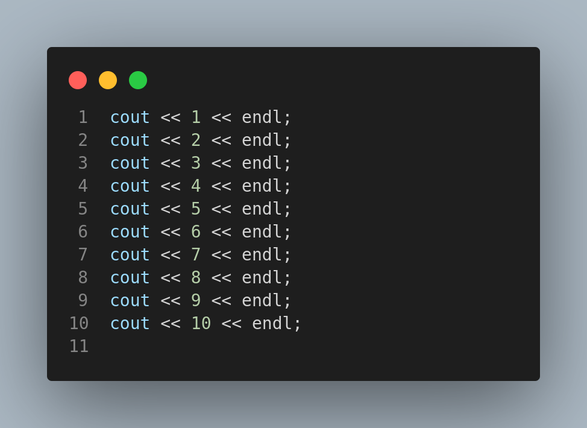
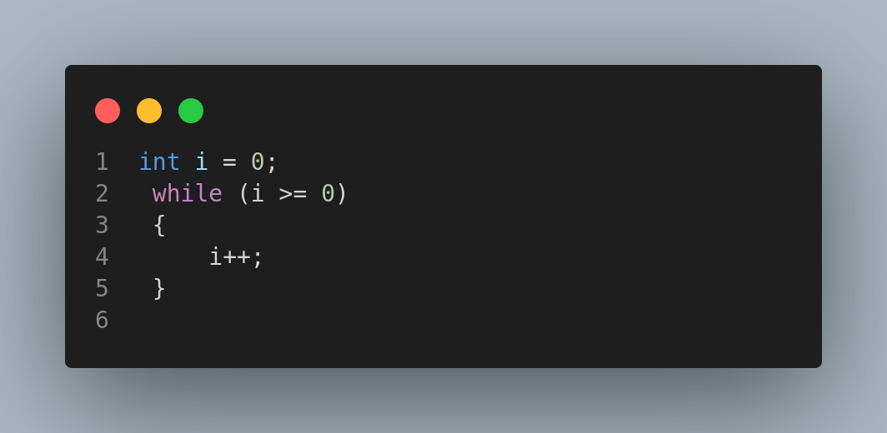
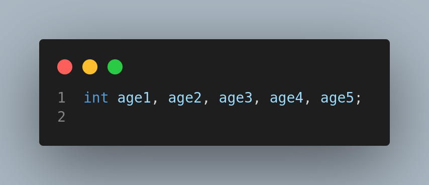
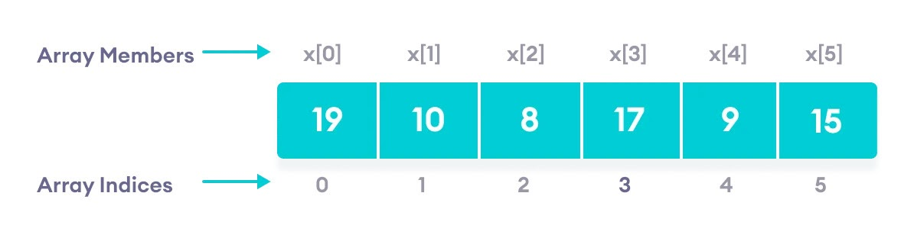
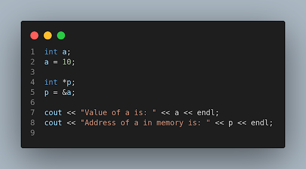
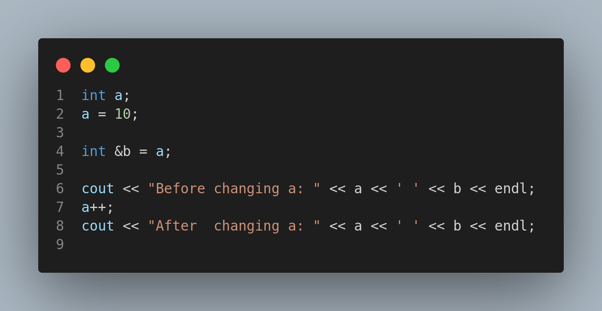
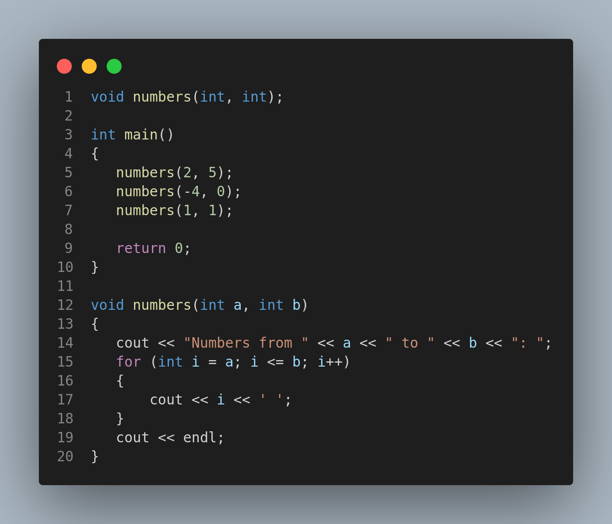

Hello Everyone!
Welcome to our Programming Workshop
Nibble Computer Society
Press
Spacebar for next slide. Esc or 'o' for overview.
https://programming-workshop.netlify.app/#/
Loops
Need of Loops
Write a program to print numbers 1 to 10
While loop

Do-While Loop

For Loop

Infinite Loop
An infinite loop is a sequence of instructions that, as written, will continue endlessly, unless an external intervention occurs.
Arrays
What is an Array?
An Array is a collection of items stored at contiguos memory locations.
Need of an Array
Problem to store ages of 100 people and iterating over it
What are Arrays and their usefulness?
Limitations of Arrays.
- Static data structure
- All elements have the same data types
Types of Arrays

Pointers and references
Need of Pointers
Sometimes it’s better to give the address of your home rather than giving your home.
How to use Pointers
References
Functions
Need for Functions
- Modular
- We can define a code once and then use it as many times as we want in just one line.
Declaring and defining a function
Memory Visualization!
What is memory?

Complexity

What is Time Complexity?
Time complexity is simply a measure of the time it takes for a function or expression to complete its task, as well as the name of the process to measure that time.

N = 1000033 ( Prime number )
Time taken by A's program = 1 ms * number of divisions
= 1 ms * 1000033
= approximately 1000 seconds or 16.7 mins.
Time taken by B's program = 1ms * number of divisions
= 1ms * square root of 1000033
= approximately 1000ms = 1 second.
N = 1500450271 ( Prime number )
Time taken by A's program = 1 ms * number of divisions
= 1 ms * 1500450271
= approximately 1000000 seconds or 11.5 days.
Time taken by B's program = 1ms * number of divisions
= 1ms * square root of 1500450271
= approximately 40000ms = 40 seconds.


BrainStorming Sessions


Space Complexity
Space complexity is a measure of how efficient your code is in terms of memory used.
Standard Computer System
A 2 gigahertz processor means 2*10^9 operations cycles per second.
Searching
What is Searching?
- Searching is the process of finding a given value position in a list of values.
- It decides whether a search key is present in the data or not.
- It is the algorithmic process of finding a particular item in a collection of items.
Sequential Search
- Sequential search is also called Linear Search.
- Sequential search starts at the beginning of the list and checks every element of the list.
- It is a basic and simple search algorithm.
- Sequential search compares the element with all the other elements given in the list. If the element is matched, it returns the value index, else it returns -1.

Linear Search Function

Binary Search
- Binary Search is used for searching an element in a sorted array.
- It is a fast search algorithm with run-time complexity of O(log n).
- Binary search works on the principle of divide and conquer.
- This searching technique looks for a particular element by comparing the middle most element of the collection.
- It is useful when there are a large number of elements in an array.

.png)
Sorting
What is sorting?
Insertion Sort
Insertion sort is a sorting algorithm that places an unsorted element at its suitable place in each iteration. Insertion sort works similarly as we sort cards in our hand in a card game.
.png)
.png)
.png)
.png)
.png)

Merge Sort
What is Merge Sort?
Merge Sort is a sorting algorithm, which is commonly used in computer science. Merge Sort is a divide and conquer algorithm. It first divides the array into equal halves and then combines them in a sorted manner.
How does it work?
- If there is only one element in the list it is already sorted, return.
- Divide the list into two halves until it can no longer be divided.
- Merge the smaller lists into a new list in sorted order.
.png)
.png)
Understanding with an example
.png)
Complexity Analysis

Linked List
What is a linked list?
A linked list is a linear data structure, in which the elements are not stored at contiguous memory locations.

- They are dynamic in nature which allocates the memory when required.
- Insertion and deletion operations can be easily implemented.
- Stacks and queues can be easily executed.
- Linked List reduces the access time.
Disadvantages of linked list
- The memory is wasted as pointers require extra memory for storage.
- No element can be accessed randomly; it has to access each node sequentially.
- Reverse Traversing is difficult in the linked list.
Types of Linked list

There are 3 different implementations of Linked List available, they are:
- Singly linked list.
- Doubly linked list.
- Circular linked list.
Singly linked list
Singly linked lists contain nodes which have a data part as well as an address part i.e. next, which points to the next node in the sequence of nodes.

Doubly linked list
In a doubly linked list, each node contains a data part and two addresses, one for the previous node and one for the next node.

Circular linked list
In a circular linked list the last node of the list holds the address of the first node hence forming a circular chain.

Stacks
What is a Stack?
Stack is a linear data structure which follows a particular order in which the operations are performed. The order may be LIFO(Last In First Out) or FILO(First In Last Out).

Basic features of Stack
- Stack is an ordered list of similar data types.
- Stack is a LIFO(Last in First out) structure or we can say FILO(First in Last out).
- push() function is used to insert new elements into the Stack and pop() function is used to remove an element from the stack. Both insertion and removal are allowed at only one end of Stack called Top.
- Stack is said to be in Overflow state when it is completely full and is said to be in Underflow state if it is completely empty.
Algorithm for PUSH operation
- Check if the stack is full or not.
- If the stack is full, then print an error of overflow and exit the program.
- f the stack is not full, then increment the top and add the element.
Algorithm for POP operation
- Check if the stack is empty or not.
- If the stack is empty, then print an error of underflow and exit the program.
- f the stack is not empty, then print the element at the top and decrement the top.
| Position of Top | Status of stack |
|---|---|
| -1 | Stack is empty |
| 0 | Only one element is stack |
| N-1 | Stack is full |
| N | Overflow state od stack |

Queues
Queue is also an abstract data type or a linear data structure in which the first element is inserted from one end called the REAR(also called tail), and the removal of the existing element takes place from the other end called FRONT(also called head).
Basic features of Queues
- Like stack, queue is also an ordered list of elements of similar data types.
- Queue is a FIFO( First in First Out ) structure.
- Once a new element is inserted into the Queue, all the elements inserted before the new element in the queue must be removed, to remove the new element.
- peek( ) function is often used to return the value of the first element without dequeuing it.
Algorithm of ENQUEUE
- Check if the queue is full or not.
- If the queue is full, then print an overflow error and exit the program.
- If the queue is not full, then increment the tail and add the element.
Algorithm of DEQUEUE
- Check if the queue is empty or not.
- If the queue is empty, then print an underflow error and exit the program.
- If the queue is not empty, then print the element at the head and increment the head.
Recursion
The process in which a function calls itself directly or indirectly is called recursion and the corresponding function is called a recursive function.
Guessing
Sieve of Eratosthenes
In mathematics, the sieve of Eratosthenes is a simple, ancient algorithm for finding all prime numbers up to any given limit. It does so by iteratively marking as composite (i.e., not prime) the multiples of each prime, starting with the first prime number, 2. The multiples of a given prime are generated as a sequence of numbers starting from that prime, with constant difference between them that is equal to that prime.[1] This is the sieve's key distinction from using trial division to sequentially test each candidate number for divisibility by each prime.
Introduction to Competitive Programming
That's All Folks
For Any Queries

Thank You
Nibble Computer Society